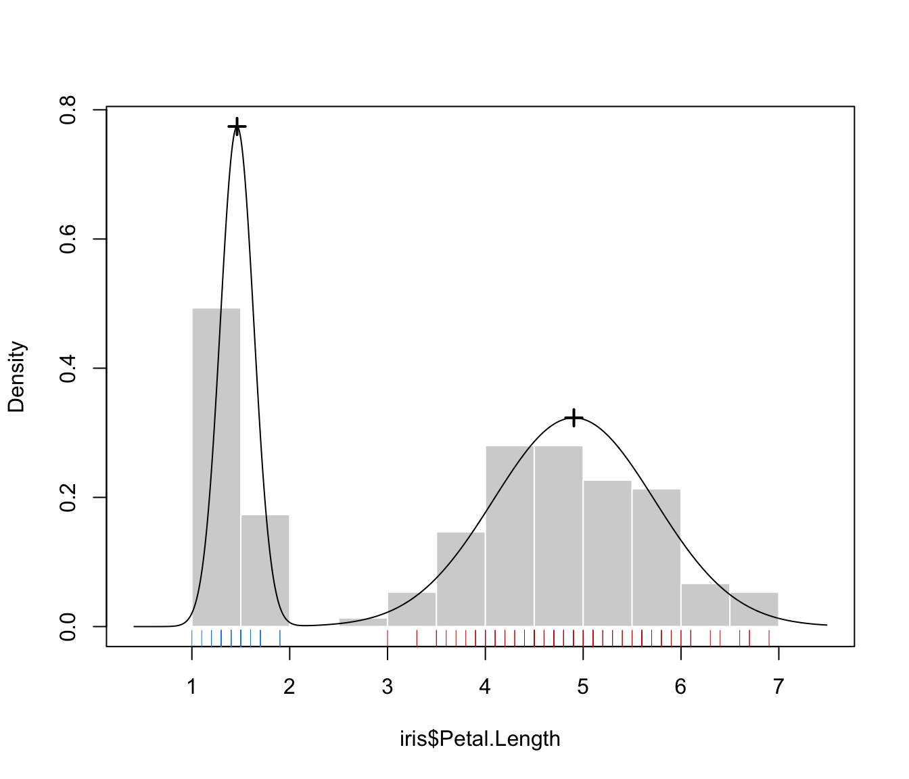
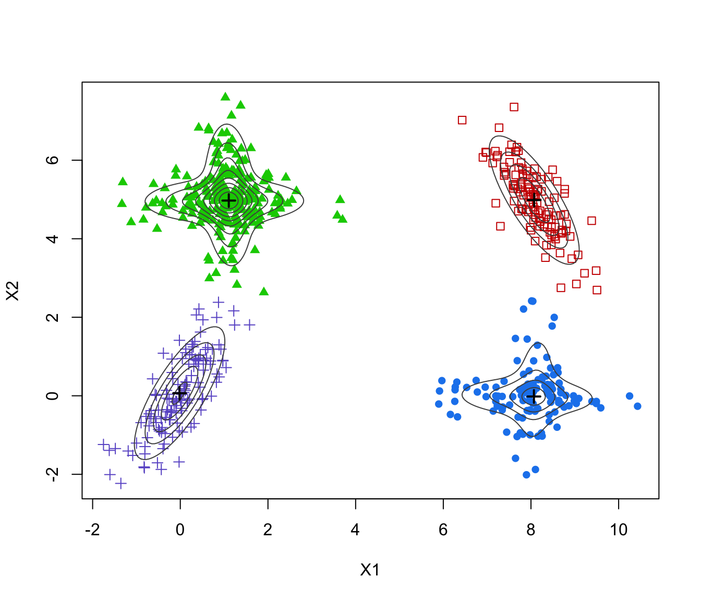
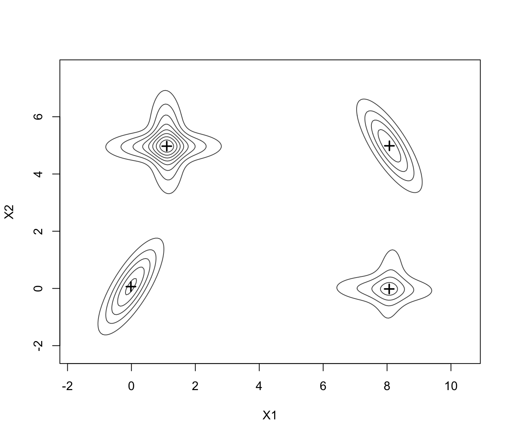
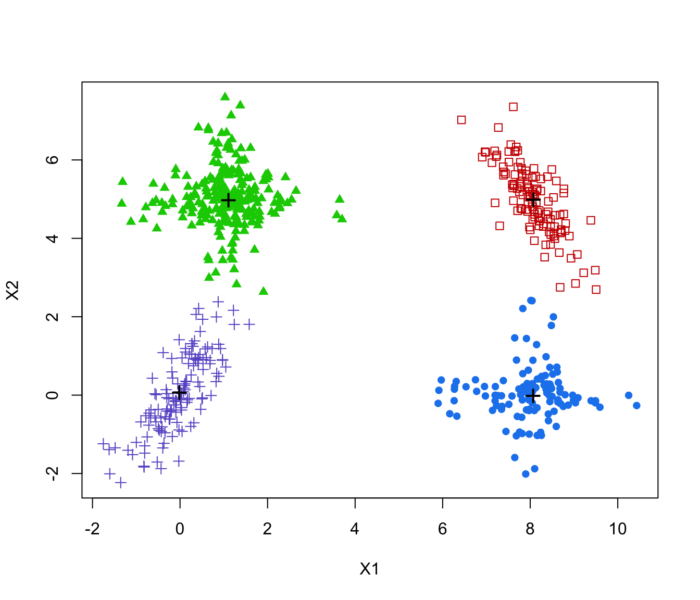
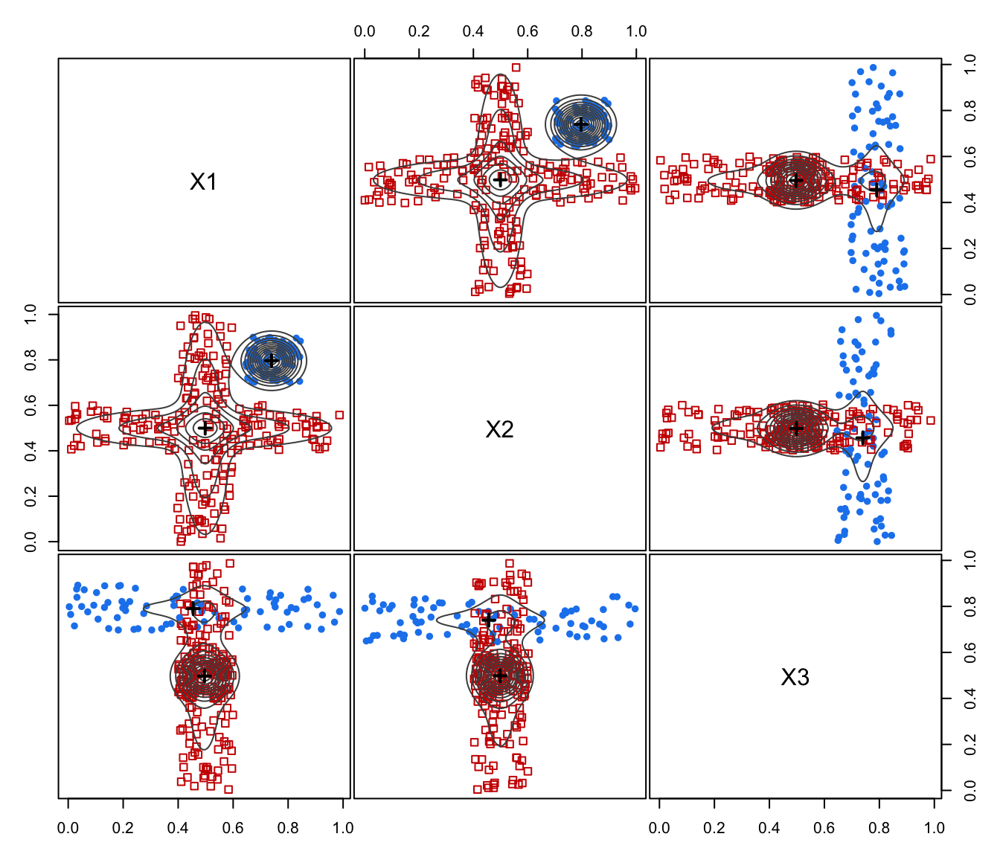
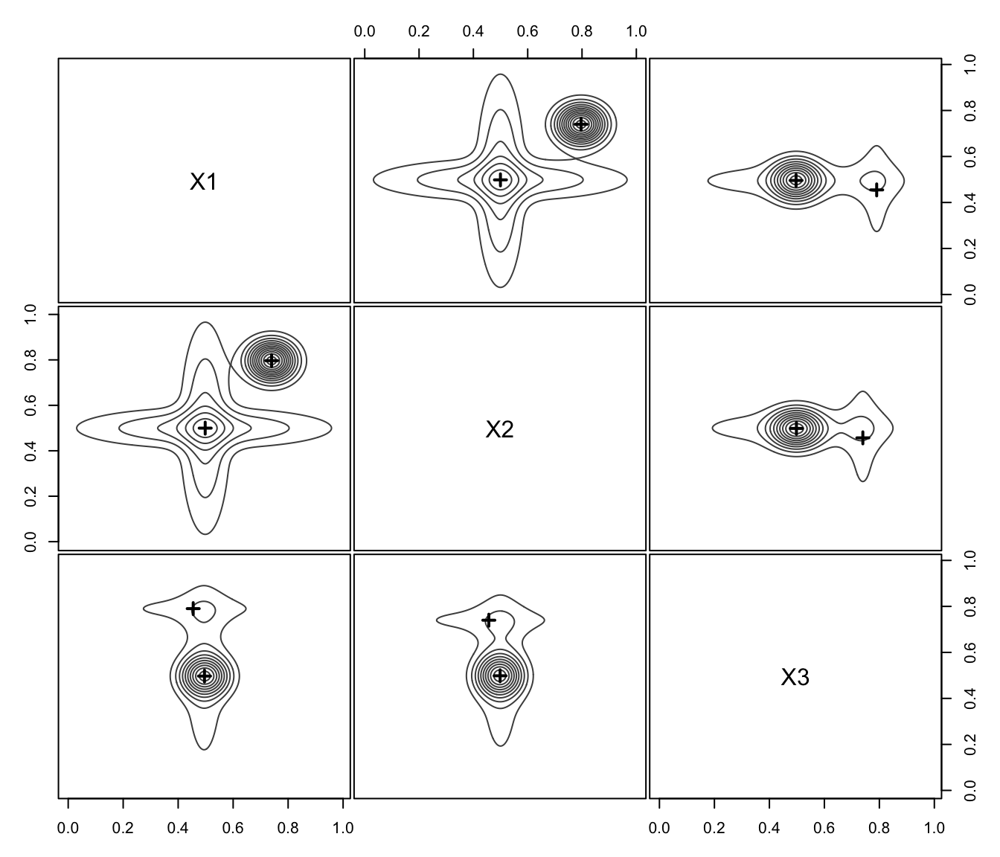
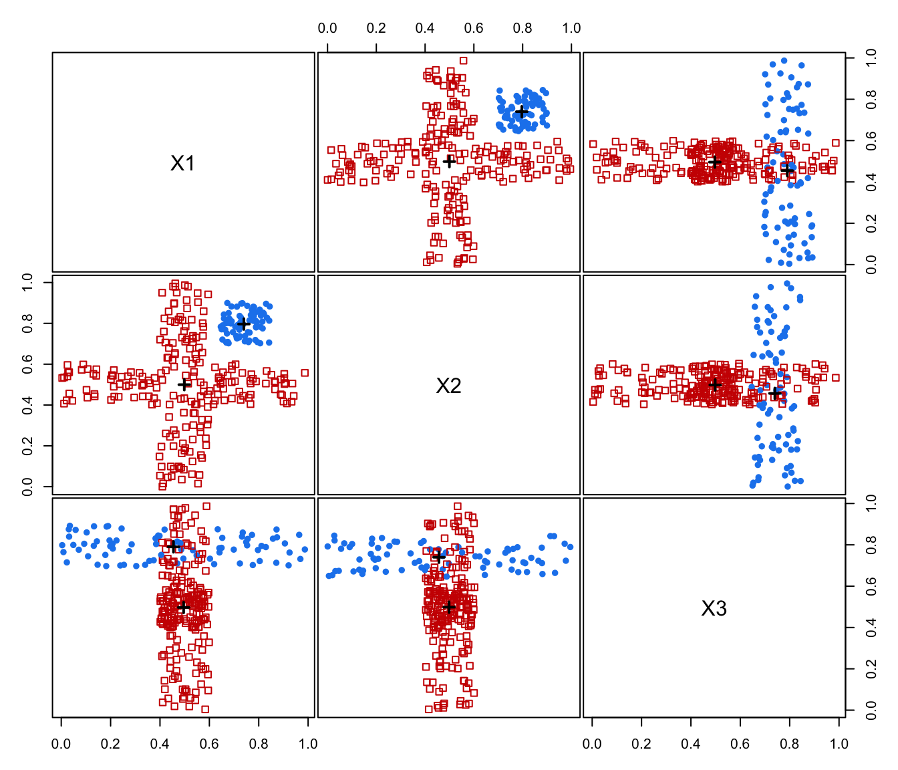

plot.MclustMEM.RdPlots for MclustMEM objects.
# S3 method for MclustMEM
plot(x, dimens = NULL, addDensity = TRUE, addPoints = TRUE,
symbols = NULL, colors = NULL, cex = NULL,
labels = NULL, cex.labels = NULL, gap = 0.2,
...)An object of class "densityMclustBounded" obtained from a call to densityMclustBounded.
A vector of integers specifying the dimensions of the coordinate projections.
A logical indicating whether or not to add density estimates to the plot.
A logical indicating whether or not to add data points to the plot.
Either an integer or character vector assigning a plotting symbol to each unique class in classification. Elements in symbols correspond to classes in order of appearance in the sequence of observations (the order used by the function unique). The default is given by mclust.options("classPlotSymbols").
Either an integer or character vector assigning a color to each unique class in classification. Elements in colors correspond to classes in order of appearance in the sequence of observations (the order used by the function unique). The default is given by mclust.options("classPlotColors").
A vector of numerical values specifying the size of the plotting symbol for each unique class in classification. By default cex = 1 for all classes is used.
A vector of character strings for labelling the variables. The default is to use the column dimension names of data.
A numerical value specifying the size of the text labels.
A numerical argument specifying the distance between subplots (see pairs).
Further arguments passed to or from other methods.
No return value, called for side effects.
Scrucca L. (2021) A fast and efficient Modal EM algorithm for Gaussian mixtures. Statistical Analysis and Data Mining, 14:4, 305–314. https://doi.org/10.1002/sam.11527
# \donttest{
# 1-d example
GMM <- Mclust(iris$Petal.Length)
MEM <- MclustMEM(GMM)
plot(MEM)

# 2-d example
data(Baudry_etal_2010_JCGS_examples)
GMM <- Mclust(ex4.1)
MEM <- MclustMEM(GMM)
plot(MEM)

plot(MEM, addPoints = FALSE)

plot(MEM, addDensity = FALSE)

# 3-d example
GMM <- Mclust(ex4.4.2)
MEM <- MclustMEM(GMM)
plot(MEM)

plot(MEM, addPoints = FALSE)

plot(MEM, addDensity = FALSE)

# }